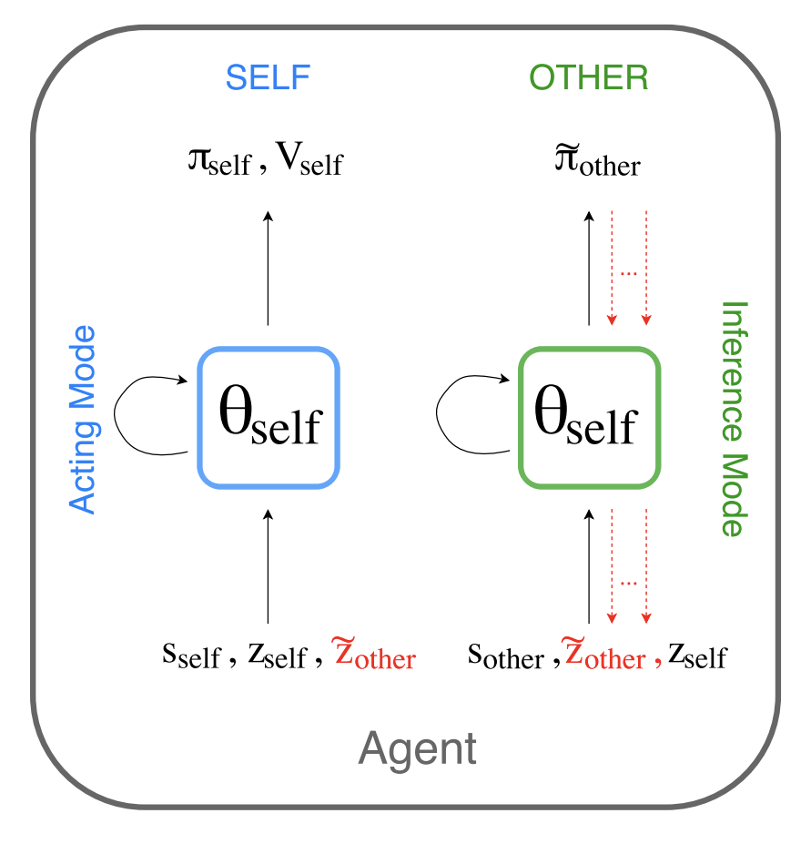
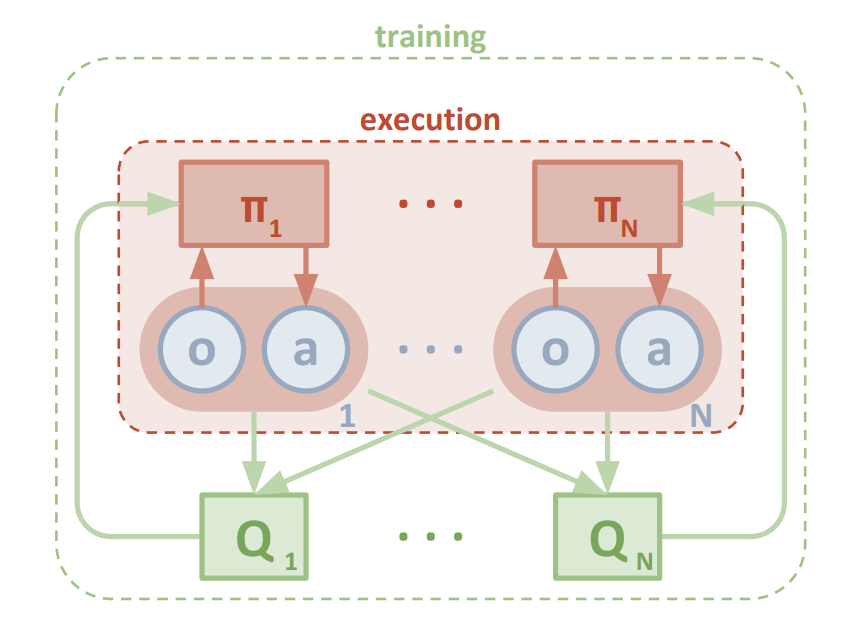
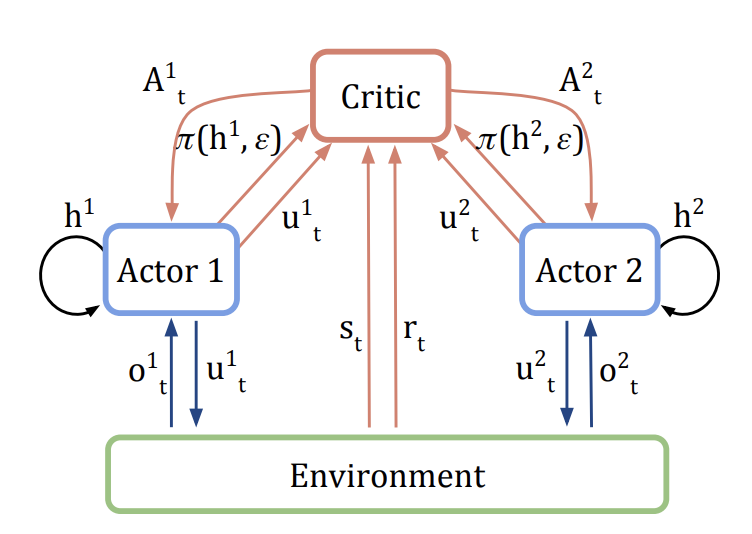

Multi-agent Reinforcement Learning Literature Reviews
While deep reinforcement learning has been proved successful in many domains, solutions like deep Q-learning and Policy Gradient methods [Mnih et al., 2013, Lillicrap et al., 2015, Silver et al., 2014] can achieve impressive results in some challenging
single agent environment such as Atari games. However, the multi-agent environment makes the learning problem more challenging ,because agents policies are changing during the training and the environment is not stationary for a single agent
algorithm to learn a good strategy.
I am interested in this field of research so I would like to share a review of the literatures. I have categorized the literatures into three groups: opponent modeling methods, centralized critic methods and communication methods.
Learning with Opponent-Learning Awareness LOLA's value estimination is not only based on the agent's current policy, but also the other's policy after one anticipated update. LOLA agents do not predict the opponent's policy update and learn a best respone, but attempt to
influence the other's policy update. They are shaping the update direction of each other. In experiments, the LOLA agents are able to reach a Nash-equilibrium tic-tac-toc.
The code is in github repo
Modeling other agents by oneself in this method (SOM), each agent holds a belief of other agents, and they will use its own policy to predict the other's action and to update the belief.

Architecture of SOM (image source)
Centralized Critic Methods
Multi-Agent Actor-Critic for Mixed Cooperative-Competitive Environments MADDPG has been qualified as the state-of-art multi-agent reinforcement learning architecture since it was published.
The main idea in this work is to use a centralized critic to give the action-value estimination with the actions of all agents, where the value estimination contrains the information of the global state. This solve the problem
of partial observability and non-stationarity that brought by the changing policies of other agents in the environment.
The experiment environment is OpenAI's multiagent-particle-envs , and code is in github

Architecture of MADDPG (image source)
Counterfactual Multi-agent reinforcement learning Similar to MADDPG, COMA uses a centralized critic to estiminate the A-function. What's different is that COMA added a counterfactual baseline to margin out a single agent's action. So that the credit that the agent recieves can be considered as independent of other agents.
They used StarCrat unit micromanagement as the experiment environment.

Architecture of COMA (image source)
Communication Methods
Learning to communicate with deep multi-agent reinforcement learning This work introduces an architecture where agents can communicate via a limited bandit channel. There are two method
of communication, one is to decompose the action into environment action and communication action, to learn them separatedly with two neural networks; the other one is to share the gradients among agents via the communication channel.